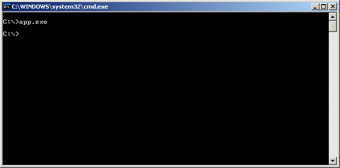
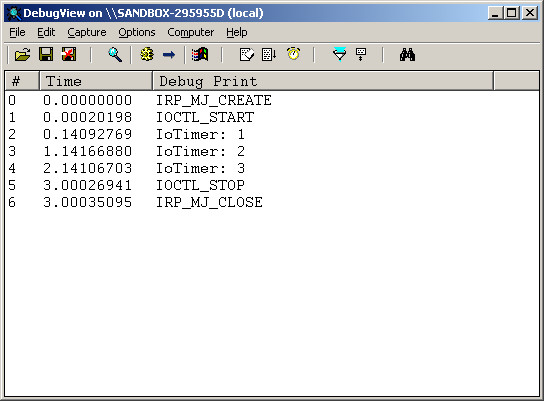

Steward
分享是一種喜悅、更是一種幸福
驅動程式 - Windows NT Driver (Legacy) - 使用範例 - Pascal (DDDK) - Use I/O Timer
參考資訊：
https://wasm.in/
http://four-f.narod.ru/
https://github.com/steward-fu/ddk
http://www.delphibasics.info/home/delphibasicsprojects/delphidriverdevelopmentkit
I/O Timer是Windows內核提供的一種Timer，呼叫的間隔為每秒一次，使用步驟如下：
1. IoInitializeTimer() 2. IoStartTimer() 3. IoStopTimer()
main.pas
unit main;
interface
uses
DDDK;
const
DEV_NAME = '\Device\MyDriver';
SYM_NAME = '\DosDevices\MyDriver';
// CTL_CODE(FILE_DEVICE_UNKNOWN, 0x800, METHOD_BUFFERED, FILE_ANY_ACCESS)
IOCTL_START = $222000;
// CTL_CODE(FILE_DEVICE_UNKNOWN, 0x801, METHOD_BUFFERED, FILE_ANY_ACCESS)
IOCTL_STOP = $222004;
function _DriverEntry(pMyDriver : PDriverObject; pMyRegistry : PUnicodeString) : NTSTATUS; stdcall;
implementation
var
cnt : ULONG;
procedure OnTimer(pMyDevice : PDeviceObject; pContext : Pointer); stdcall;
begin
cnt := cnt + 1;
DbgPrint('IoTimer: %d', [cnt]);
end;
function IrpOpen(pMyDevice : PDeviceObject; pIrp : PIrp) : NTSTATUS; stdcall;
begin
DbgPrint('IRP_MJ_CREATE', []);
Result := STATUS_SUCCESS;
pIrp^.IoStatus.Information := 0;
pIrp^.IoStatus.Status := Result;
IoCompleteRequest(pIrp, IO_NO_INCREMENT);
end;
function IrpClose(pMyDevice : PDeviceObject; pIrp : PIrp) : NTSTATUS; stdcall;
begin
DbgPrint('IRP_MJ_CLOSE', []);
Result := STATUS_SUCCESS;
pIrp^.IoStatus.Information := 0;
pIrp^.IoStatus.Status := Result;
IoCompleteRequest(pIrp, IO_NO_INCREMENT);
end;
function IrpIOCTL(pMyDevice : PDeviceObject; pIrp : PIrp) : NTSTATUS; stdcall;
var
code : ULONG;
psk : PIoStackLocation;
begin
psk := IoGetCurrentIrpStackLocation(pIrp);
code := psk^.Parameters.DeviceIoControl.IoControlCode;
case code of
IOCTL_START: begin
DbgPrint('IOCTL_START', []);
cnt := 0;
IoStartTimer(pMyDevice);
end;
IOCTL_STOP: begin
DbgPrint('IOCTL_STOP', []);
IoStopTimer(pMyDevice);
end;
end;
Result := STATUS_SUCCESS;
pIrp^.IoStatus.Information := 0;
pIrp^.IoStatus.Status := Result;
IoCompleteRequest(pIrp, IO_NO_INCREMENT);
end;
procedure Unload(pMyDriver : PDriverObject); stdcall;
var
szSymName : TUnicodeString;
begin
RtlInitUnicodeString(@szSymName, SYM_NAME);
IoDeleteSymbolicLink(@szSymName);
IoDeleteDevice(pMyDriver^.DeviceObject);
end;
function _DriverEntry(pMyDriver : PDriverObject; pMyRegistry : PUnicodeString) : NTSTATUS; stdcall;
var
szDevName : TUnicodeString;
szSymName : TUnicodeString;
pMyDevice : PDeviceObject;
begin
RtlInitUnicodeString(@szDevName, DEV_NAME);
RtlInitUnicodeString(@szSymName, SYM_NAME);
IoCreateDevice(pMyDriver, 0, @szDevName, FILE_DEVICE_UNKNOWN, 0, FALSE, pMyDevice);
pMyDriver^.MajorFunction[IRP_MJ_CREATE] := @IrpOpen;
pMyDriver^.MajorFunction[IRP_MJ_CLOSE] := @IrpClose;
pMyDriver^.MajorFunction[IRP_MJ_DEVICE_CONTROL] := @IrpIOCTL;
pMyDriver^.DriverUnload := @Unload;
pMyDevice^.Flags := pMyDevice^.Flags or DO_BUFFERED_IO;
pMyDevice^.Flags := pMyDevice^.Flags and not DO_DEVICE_INITIALIZING;
IoInitializeTimer(pMyDevice, OnTimer, Nil);
Result := IoCreateSymbolicLink(@szSymName, @szDevName);
end;
end.
app.pas
program main;
{$APPTYPE CONSOLE}
uses
forms,
dialogs,
windows,
classes,
messages,
sysutils,
variants,
graphics,
controls;
const
METHOD_BUFFERED = 0;
METHOD_IN_DIRECT = 1;
METHOD_OUT_DIRECT = 2;
METHOD_NEITHER = 3;
FILE_ANY_ACCESS = 0;
FILE_DEVICE_UNKNOWN = $22;
var
fd : DWORD;
ret : DWORD;
code: DWORD;
begin
fd := CreateFile('\\.\MyDriver', GENERIC_READ or GENERIC_WRITE, FILE_SHARE_READ, Nil, OPEN_EXISTING, FILE_ATTRIBUTE_NORMAL, 0);
code := (FILE_DEVICE_UNKNOWN shl 16) or (FILE_ANY_ACCESS shl 14) or ($800 shl 2) or (METHOD_BUFFERED);
DeviceIoControl(fd, code, Nil, 0, Nil, 0, ret, Nil);
Sleep(3000);
code := (FILE_DEVICE_UNKNOWN shl 16) or (FILE_ANY_ACCESS shl 14) or ($801 shl 2) or (METHOD_BUFFERED);
DeviceIoControl(fd, code, Nil, 0, Nil, 0, ret, Nil);
CloseHandle(fd);
end.
完成

